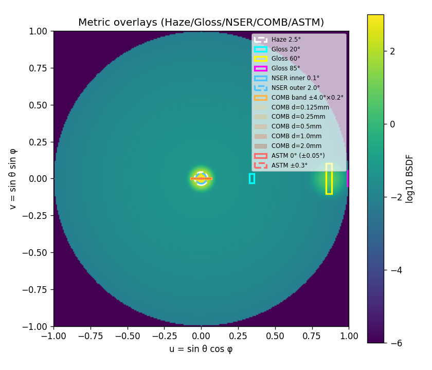
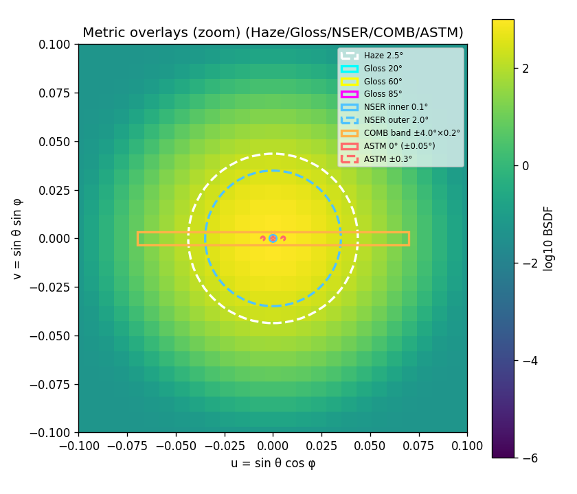
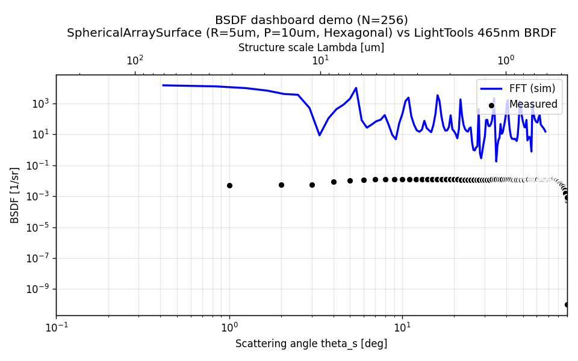
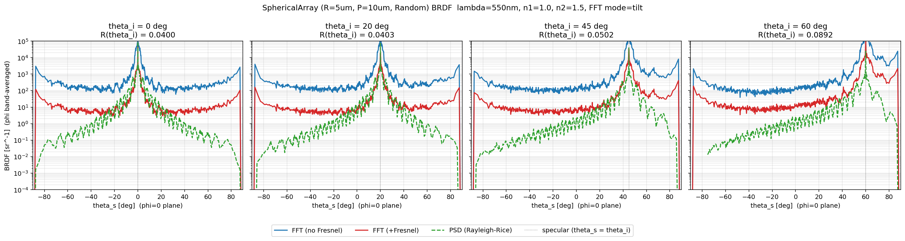
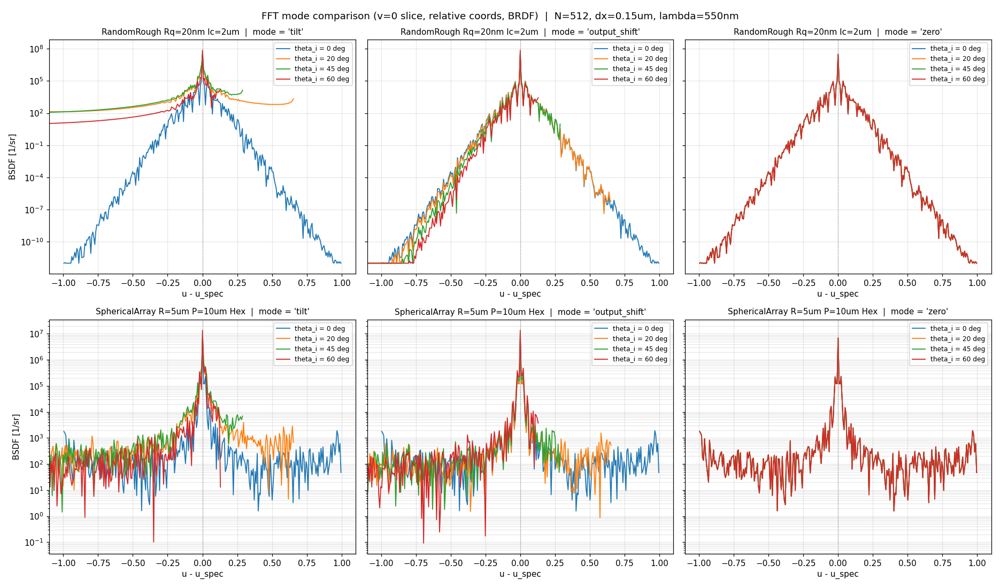
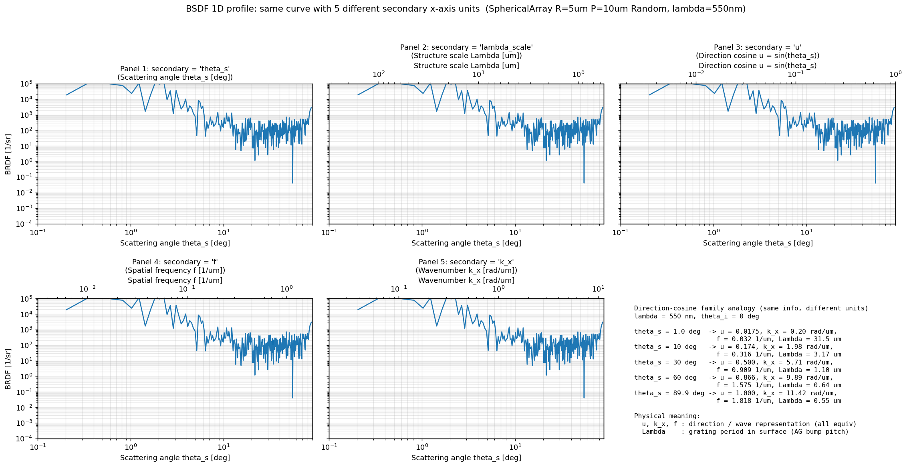
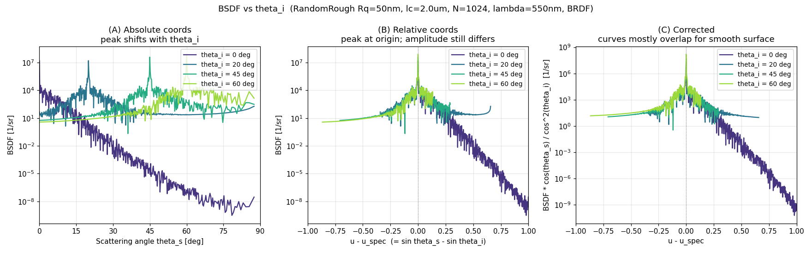

outputs/ に生成されたデモ画像・インタラクティブ HTML を GitHub のブラウザから閲覧するためのインデックスページ。
.html をソース表示するため、インタラクティブ HTML（Bokeh/Panel）は
raw.githack.com
経由でレンダリングする。htmlpreview.github.io は ES Module 評価順序を壊すため
Bokeh HTML では真っ白になる。PNG は相対パスで配置（ローカルでもオンラインでも動作）。
このページを raw.githack で開く
GitHub で outputs/ を開く
Bokeh ベースの 2D BSDF ヒートマップに光学指標（Haze / Gloss / DOI-NSER / DOI-COMB / DOI-ASTM）を重ね描きしたインタラクティブプロット。凡例クリックでレイヤー ON/OFF 切替可能。
Phase 1 光学指標 overlay の静止画版（フル）。Haze / Gloss / DOI-NSER / DOI-COMB / DOI-ASTM の幾何を UV 半球面に投影。

上記の Specular 近傍ズーム版。DOI-COMB の 5 くし幅（0.125–2.0 mm）のスリット群と ASTM 3 円が見やすい。

dashboard の 1D 重ね描き（FFT / PSD / MultiLayer / measured の 4 系列重畳）を matplotlib で再現した静止画。

FFT（Fresnel 補正なし）/ FFT（apply_fresnel=True でポスト乗算）/ PSD（Rayleigh-Rice）の 3 手法比較。

FFT 3 モード（tilt / output_shift / zero）の side-by-side 比較。θ_i 大での挙動差がわかる。

同一 BSDF カーブを 5 種の副軸ユニット（theta_s / lambda_scale / u / f / k_x）で表示した比較。

複数 θ_i の BSDF 比較: 絶対座標 vs 相対座標 vs Fresnel 補正後座標の 3 パネル。

| スクリプト | 生成物 | 用途 |
|---|---|---|
_demo_metric_overlays.py |
demo_metric_overlays.html / .png / _zoom.png / _1d.png | Phase 1 光学指標オーバーレイ（Haze/Gloss/DOI 3 方式）のデモ |
_demo_overlay.py |
dashboard_demo_overlay.png | dashboard の 1D 重ね描きを matplotlib で再現 |
_demo_fft_fresnel_vs_psd.py |
fft_fresnel_vs_psd.png | FFT（無補正/Fresnel 後掛け）vs PSD 比較 |
_demo_fft_modes.py |
fft_modes_comparison.png | FFT 3 モード（tilt/output_shift/zero）の side-by-side 比較 |
_demo_secondary_axis.py |
secondary_axis_units.png | 副軸ユニット 5 種の並置比較 |
_demo_theta_i_relative.py |
theta_i_relative_comparison.png | 複数 θ_i BSDF の絶対/相対/補正座標比較 |
| 方法 | URL / 手順 | 備考 |
|---|---|---|
| raw.githack（推奨） | https://raw.githack.com/bottmk/visualization/main/outputs/index.html |
Bokeh/Panel の HTML も正常動作。パブリックリポジトリ必須。即時反映 |
| GitHub Pages | Settings → Pages で main を公開 → https://bottmk.github.io/visualization/outputs/index.html |
永続 URL、CDN 配信 |
| Codespaces ローカルサーブ | cd outputs && python -m http.server 8000 → Ports タブの forwarded URL |
プライベート / オフライン用。URL 末尾にファイル名指定で個別表示可能 |
| htmlpreview.github.io | （非推奨）Bokeh HTML は真っ白になる。静的 HTML なら OK | ES Module 評価順序を壊すため動的レンダリングが失敗 |
Generated for bottmk/visualization · outputs index